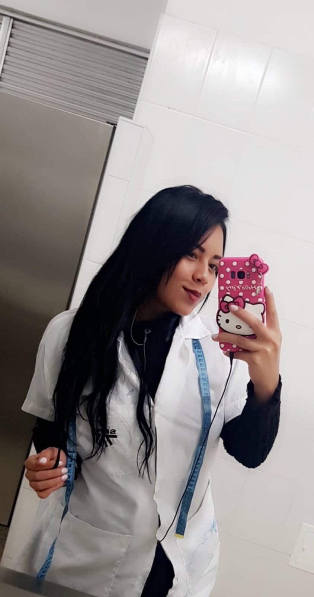
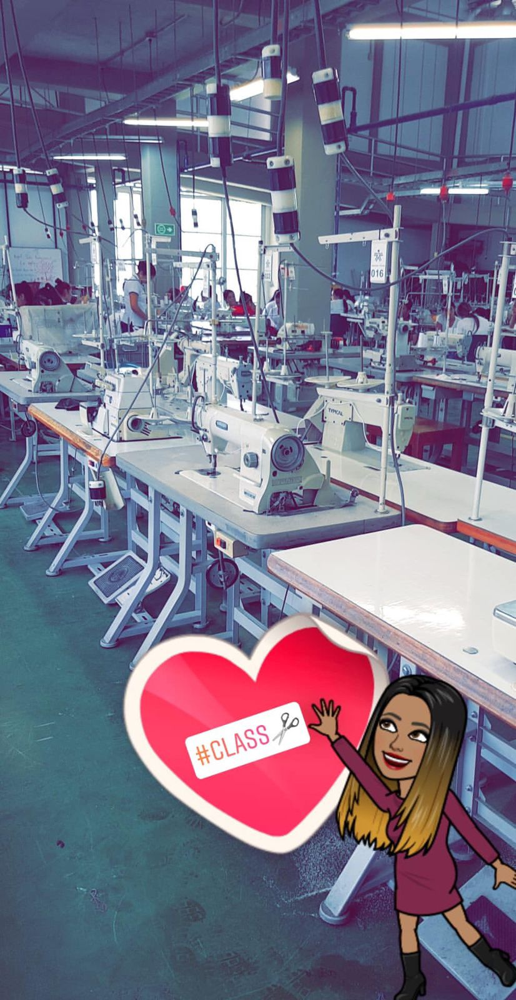
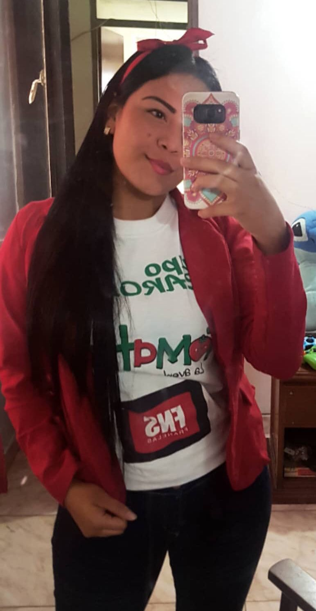
Confección
En el 2017 al 2018 hice un complementario "Confección en ropa industrial" al terminar de estudiar empece hacer las practicas
con una empresa de ROPA llamada "Grupo Carolina-Tomaticos" en la ciudad de ibagué, alli adquiri experiencia en las maquinas
de Confección para todo tipo de ropa.
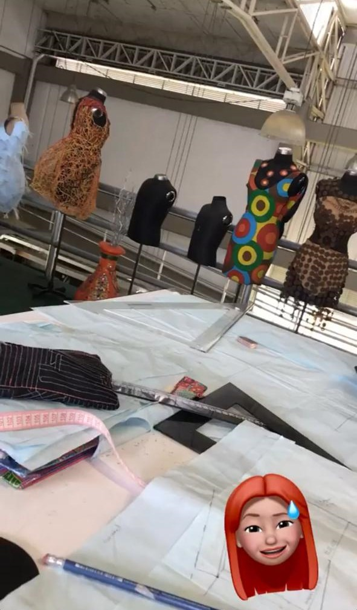
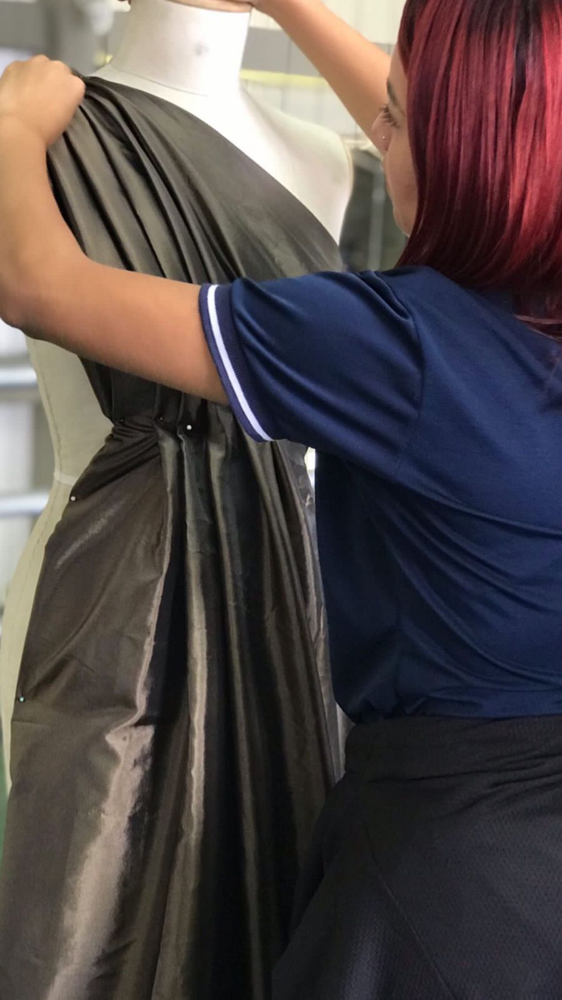
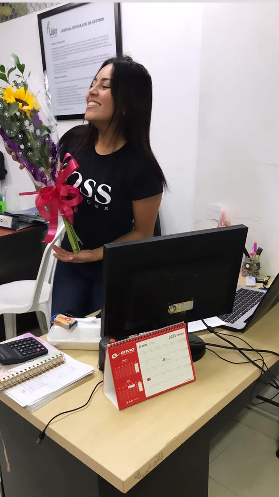
Patronaje industrial
Al terminar mis practicas de Confección, empece a estudiar Patronaje Industrial, el cual dure aproximadamente año y medio
y después empece de nuevo con otras practicas, las cual las hice en una empresa llamda LIDER & CO en la ciudad de ibagué
es una empresa de Moda Industrial, alli tuve un contrato de aprendizaje, y al terminarlo me dieron un nuevo contrato, ya que
mi trabjo era muy bueno, alli adquiri experiencia laboral
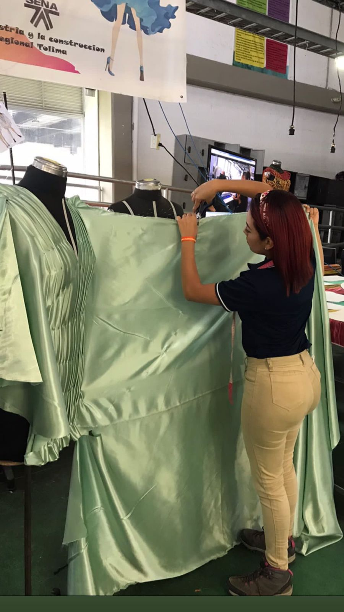
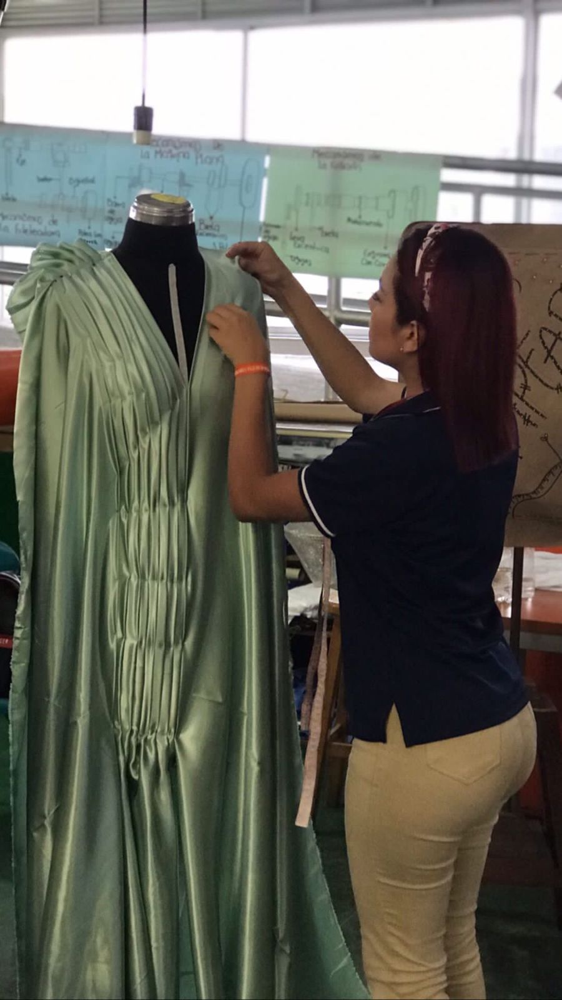
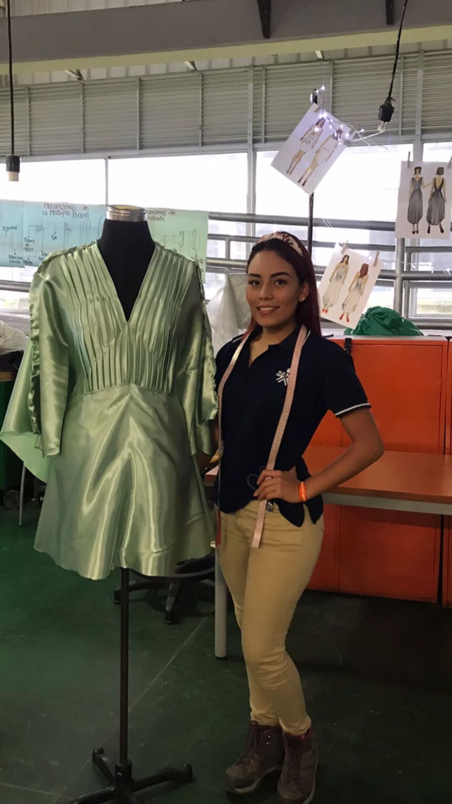
Drapeado
Tuve eventos de Drapeado, el cual consiste en que de una retazo,metro de tela puedes hacer prendas innovadoras ¡ Es sacar
lo creativo que llevas por dentro !.
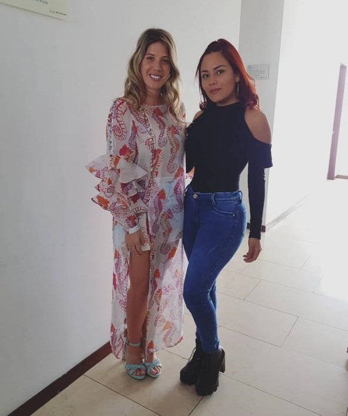
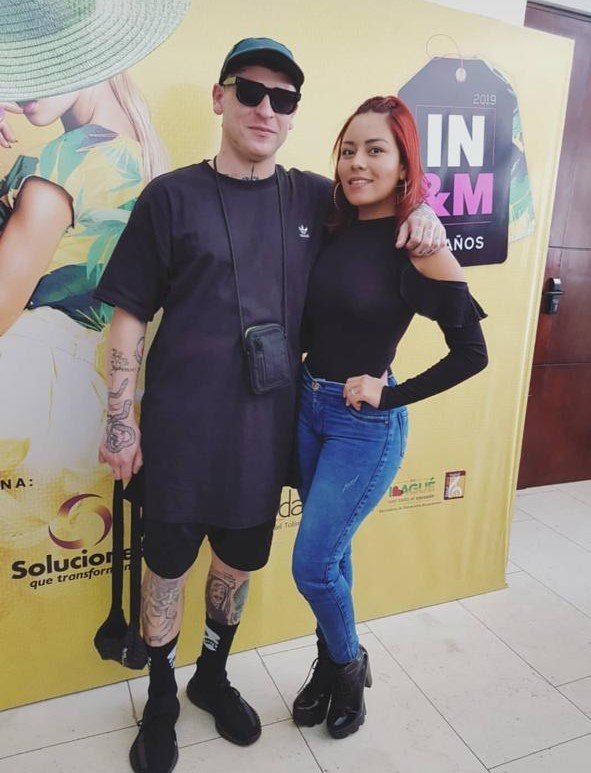
Negocios & Moda
En el 2019, asisti a un evento #IbagueNegocios&Moda el cual me adapte a mucho conocimiento, conoci Diseñadores Nacionales
e Internacionales.
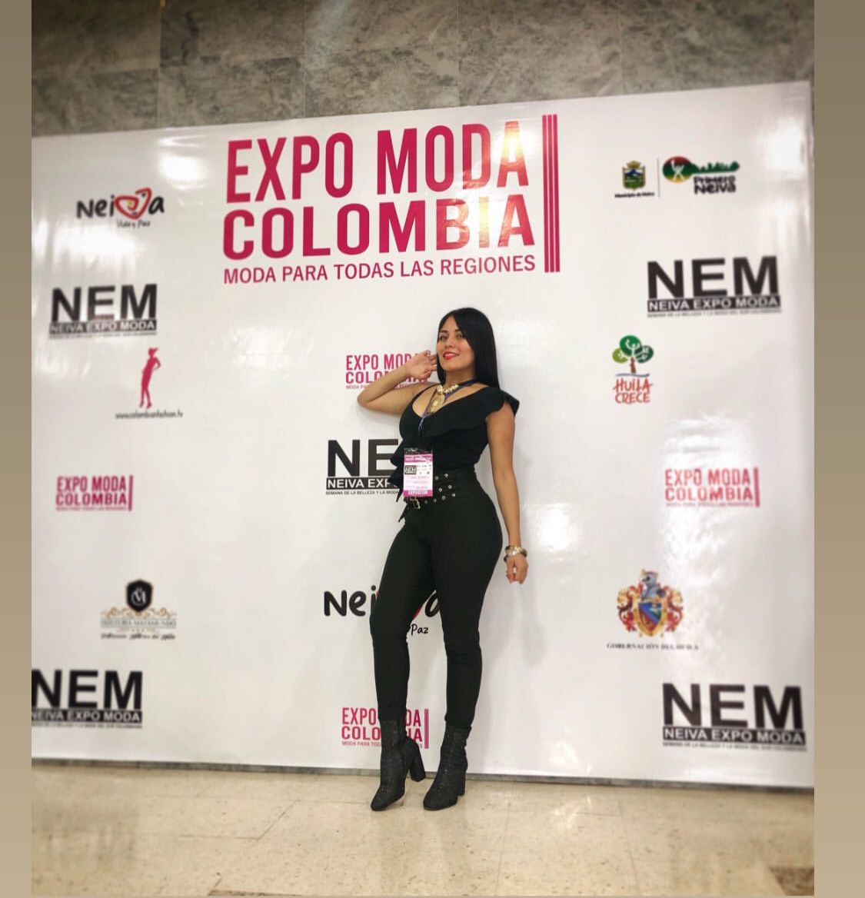
Expomoda 2022
En la ciudad de Neiva en el 2022 asisti como invitada al gran evento de moda #ExpomodaNeiva2022.
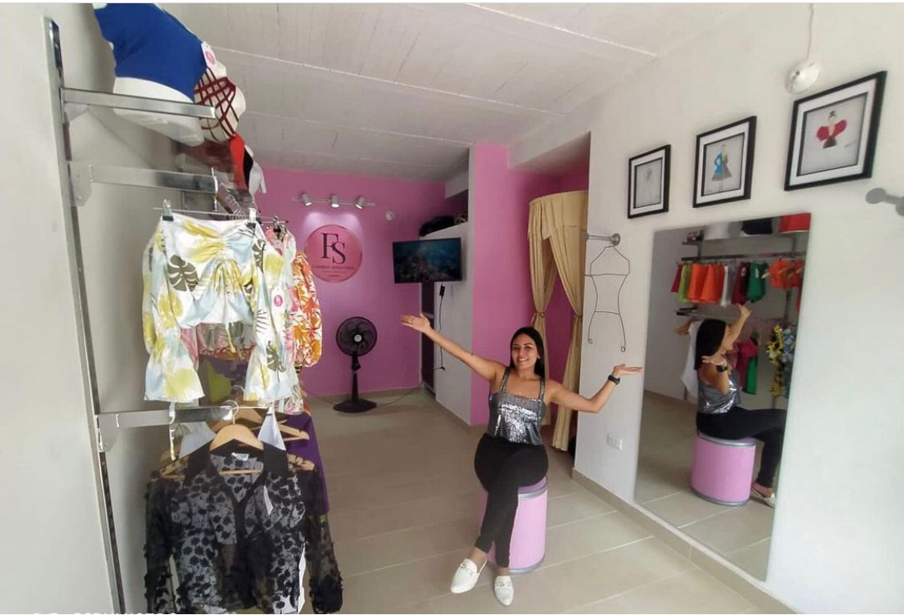
FASHION SEDUCTION
Punto Fisico, después de tanto lo pudo hacerse realidad, quiero decirles que si lo pueden soñar lo pueden lograr, siempre
y cuando sean constantes y se efoquen en lo que desean.